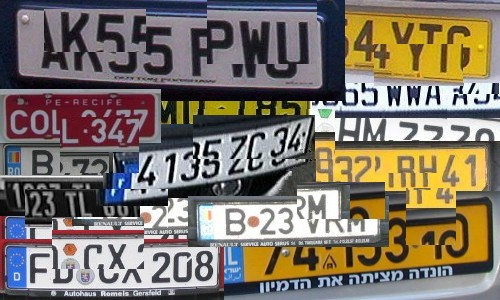

- (Rel. Dec. 2015)
VEDA LPR engine V.2.1 - SDK / API
- (for ANPR/ALPR applications developers)

[ Demo SDK/API download available! ]
[ VEDA LPR Demo application ]
[ VEDA main page ]
BRIEF GENERAL DESCRIPTION
The VEDA LPR engine SDK/API is a software library providing License Plate Recognition (LPR) core functions that can be smoothly integrated for development of Automatic Number Plate Recognition (ANPR) based applications.
It mainly consists of a Windows / 32-bit DLL (lprcore.dll), offering four (4) API functions, implemented using the __stdcall convention: two for allocating / initializing, and respectively releasing / freeing the LPR i/o data structure, i.e. LPR_init() and LPR_cleanup(), a main one, i.e. LPR_get_number(), and an auxiliary one, i.e. LPR_free_number_structures(), which, for most of the applications, is very likely to be never used. Here are a few more words about each of these functions:
-
The first one (i.e. LPR_init) uses as argument the fully qualified path to the OCR knowledge base file (KBF) to be used for plate recognition (given as a 32-bit address - pointer to char - of the respective NULL terminated string). It loads the contents of the specified KBF in memory, and also internally allocates the LPR i/o data structure which represents the data exchange interface between application(s) and the SDK, that will be used when calling the main (and auxiliary) function(s). The LPR_init function returns the 32-bit memory address (i.e. a pointer) of this allocated structure. This function is usually used only once by the calling application, prior to any other function of the SDK. It may also be used further, either for replacing the currently loaded OCR knowledge base by loading another specified one, or simply for re-initializing / re-setting the respective LPR i/o data structure contents (not its address!) at any moment.
-
The second function (i.e. LPR_cleanup) deallocates the above mentioned LPR i/o data structure and all other LPR and OCR related dinamically allocated data, including the current (last loaded) OCR knowledge base. It has no argument and returns no value.
-
The main function (i.e. LPR_get_number) uses as input:
- either an already allocated and filled (by the calling application) gray scale raw image buffer / array (e.g. got from a frame buffer of the input video stream), "normalized" to max. 256 gray levels, pixel per byte, line after line contiguously, left->right & top->down), and its respective width and height values in pixels, or alternatively, an image file's (color or grayscale, in one of the following formats: JPEG, PNG, PCX, BMP, TIFF, IMG - an old uncompressed grayscale format used with Imaging Technology frame grabbers) fully qualified path, and,
- the "analysis depth" parameter, as a 32-bit integer value from 1, 2, 3, 4 and 5, that indicates how "deep" the image analysis is to be performed for locating / segmentating the license plate (greater values meaning stronger analysis, but sometimes implying slight to significant longer analysis duration).
Its output consists in:
- three (3) NULL terminated character strings, containing respectively: the recognized license/number, the current system date (including also the index of the day of week, Sunday = 0, Monday = 1, ...), and the local time,
- a 32-bit integer representing the processing duration,
- optionally, a 32-bit integer value representing the number of license plate's areas / fields that were found, and the "head" (as a 32-bit memory address / pointer) of a chained list of data structures specific to these ones (including details like: their coordinates, associated b/w raw bitmaps pixel/bit, width, height, etc.), if the value for their number parameter was initialized with a non-negative value (i.e. 0) instead of a negative value (i.e. -1) before calling the function.
All the above data are exchanged through the LPR i/o structure whose address was returned by the LPR_init function described here above.
A 32-bit integer error code is also returned by this function, a value of zero (0) meaning "no error".
Note:
~~~~~
In the case of the Demo API/SDK (see below), the output of the above function is partially faked on purpose, i.e.:
- the "recognized" license plate string is always in the form DUMMY.01, or DUMMY.01.DUMMY.02 respectively, for license plates with two rows;
- the content of the b/w bitmaps is altered, and their respective coordinates relative to the source image are artificially shifted to the top and left of this one, while still preserving the respective heights and widths.
However, all the output data (although thus deliberately faked) is made available to the calling application, provided that the appropriate input data were given, and all the initializations were correctly made.
-
The auxiliary function (i.e. LPR_free_number_structures) frees from memory the license plate field(s) details data (e.g. binarized bitmap(s) pixel/bit, their coordinates in pixels relative to the whole image, width, height, etc.), in those cases when such data were explicitly requested (e.g. by initializing the last member of the i/o data structure with 0) when calling the LPR_get_number (main) function, and they were successfully made available to the application by this one. If no such "details" data were asked, this function shouldn't be used at all. It has no argument and returns no value.
A Windows / 32-bit C/C++ header file (i.e. lpr.h), containing the types and interfacing data structures definitions, functions prototypes, and quite exhaustive description for all the above, and how to integrate them within applications, is provided by the SDK package as an API for developers, together with other (DLLs, readme and license.txt) necessary files.
For using the library with other development languages or programming models (e.g. VB, DELPHI, .NET framework, etc.), the contents of this C/C++ header file should be appropriately translated and inserted in the respective source code, or appropriate wrappers have to be built (taking care to preserve the data and functions types, sizes, and calling conventions compatibilities, respectively).
The integration within application(s) should be however very rapid, smooth and easy.
The per image analysis duration depends on the performance of the host computer (type, model and frequency of the CPU), the digital image content, the OCR knowledge base (how adequate, accurate and well it was trained). It may thus usually range from a few, to hundreds of milliseconds.
An example for the VEDA LPR engine SDK/API library usage within a simple Windows / 32-bit C console application (i.e. lprtest.c, and its respective executable form, lprtest.exe files) is also included in the API/SDK package.
Note:
~~~~~
The lprtest.exe Windows / 32-bit console example might be also used as a "wrapper" for using the VEDA LPR engine's main (recognition) function on individual image files from within an application written in any programming language without integrating the API itself. It uses 3 calling parameters (i.e. fully qualified path of the OCR knowledge base file to be used, fully qualified path of the source/target image file, and image analysis depth as an integer value ranging from 1 to 5) that should be given in the command line. It returns its output printed both on the screen and as a text file in the same path and having the same name with the source image, but the .txt extension. This file contains 4 lines (as CR+LF terminated character strings), representing: the recognized license plate, the date, and the time (given by the host system at the analysis moment), and the index of the day of the week (Sunday = 0). Applications may call the lprtest.exe file as an external program, and then get its output, as needed, from the respective text lines of the aforementioned output file.
Remark:
~~~~~~~
Each copy of the VEDA LPR engine SDK/API is individualized through a specific internal Serial Number (S/N), and its usage is protected by a "software key" (not a hardware dongle!), i.e. by a License Activation Key (LAK), in the form of an ASCII text file. The LAK may be obtained after installing the SDK and trying to run it first time, by providing us back some info (i.e. a "fingerprint" of the host computer, together with the S/N uniquely identifying the respective SDK library), that is automatically displayed within a "License infringement" warning message box, and is also stored within an ASCII text file, by the SDK functions when(ever) attempted to be used / run and the appropriate LAK isn't found. Moreover, without a valid LAK, these SDK functions aren't working at all.
THE DEMO SDK / API RELEASE
The Demo consists of a "fake" / "dummy" (and partial) VEDA LPR engine SDK/API for Windows / 32-bit. It may be used, as a temporary substitute for the real one, solely for application(s) development / integration test and evaluation purposes. It doesn't provide real results, but, instead, some "dummy" ones. However, it certainly may be helpful while developing applications and want to estimate the programming effort and test the integration mechanisms (i.e. functions calls, parameters and i/o data exchange) before getting and using the real VEDA LPR engine functionality.
This "fake" SDK / API allows developers to:
- test the integration of the SDK functions within their application(s);
- check if the parameters / data exchange with the SDK works as expected;
- make an approximative idea about the duration of the LPR involved processings, since the image segmentation part, which is the most time consuming, is however performed (even if not making available its real results and the OCR functions that are normally applied on the respective ones are not included at all in the "fake" SDK).
Remarks:
~~~~~~~~
- In fact, only the main DLL (lprcore.dll) is a "fake" one, all the other included components being the real ones.
- While for each and any real SDK license (either being a "developer" or a "run-time" one), identifiable through an unique Serial Number (S/N), a License Activation Key (LAK) is mandatory to be obtained, no S/N is provided and no activation (LAK) is required for using the "fake" SDK / API.
- Please note that, even if it might be used as it is for complete applications development, the Demo ("fake") SDK / API is intended for integration test and evaluation purposes only, while for deploying / integrating real applications using the VEDA LPR engine SDK / API, "developer" licenses are however mandatory to be acquired.
- For really testing the license plates recognition rates and speed (including not only the segmentation, but also the recognition duration), besides the "fake" SDK / API, a fully working VEDA LPR free DEMO application is provided and may be downloaded (from its respective page) and used.
- The VEDA LPR engine (in fact the VEDA OCR/NeurOCR engine on which it relies on) is trainable, and a training utility / tool is also provided with the VEDA LPR free DEMO application (see above).
You can download a FREE
DEMO release of the VEDA LPR engine SDK / API
(Windows / 32-bit) from HERE. What you'll get when
downloading will be a fake_lpr.zip
archive file.
The contents of this one must be initialy extracted into an empty directory/folder on
your computer and all the necessary archived files "unpacked" by running the
install.bat one.
Among the unpacked files that you'll get, there will also be a
readme.txt text one, which is
recommended to be read before starting to use the SDK.
[ Download free DEMO SDK now ! ]
[ Top of page ]